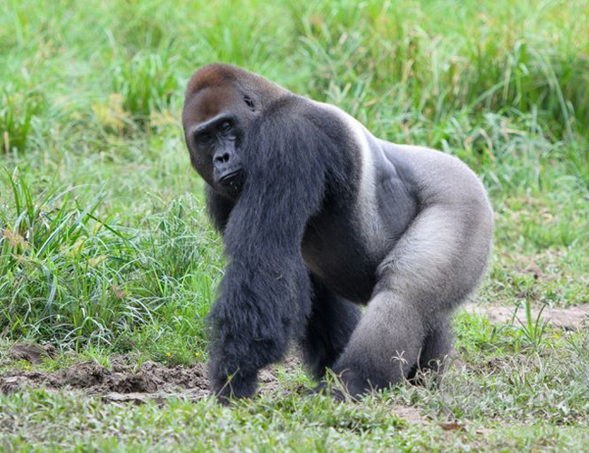

The Western Lowland Gorilla
The western lowland gorilla (Gorilla gorilla gorilla) is the nominate subspecies of
the western gorilla, and the smallest of the four gorilla subspecies. The western lowland gorilla is the only subspecies kept in zoos
with the exception of Amahoro, a female eastern lowland gorilla at Antwerp Zoo and a few mountain gorillas kept captive in
the Democratic Republic of the Congo.
Population: Western lowland gorillas are critically endangered. It is believed that there are possibly
100,000 of them left in the wild. The presence of western lowland gorillas has allowed humans to further the study of how
gorillas compare with humans in regards to human diseases, behavior, linguistic and psychological aspects of their lives. They are
hunted illegally for their skins and meat in Africa and captured to be sold to zoos. While defended as being economically profitable
for restaurants and local people, it is a large contributor to the endangered status of the western lowland gorilla.
Location: The western lowland gorilla (Gorilla gorilla gorilla) is one of two subspecies of the western gorilla (Gorilla gorilla)
that lives in montane, primary and secondary forests and lowland swamps in central Africa in Angola, Cameroon, Central African
Republic, Republic of the Congo, Democratic Republic of the Congo, Equatorial Guinea and Gabon.
Appearance: The western lowland gorilla is the smallest subspecies of gorilla but nevertheless
still a primate of exceptional size and strength. This species of gorillas exhibits pronounced sexual dimorphism. They possess
no tails and have jet black skin along with coarse black hair that covers their entire body except for the face, ears, hands and
feet. The hair on the back and rump of males takes on a grey coloration and is also lost as they get progressively older. This
coloration is the reason why older males are known as "silverbacks". Their hands are proportionately large with nails on all digits,
similar to that of a human's, and very large thumbs. They have short muzzles, a prominent brow ridge, large nostrils and small eyes
and ears. Other features are large muscles in the jaw region along with broad and strong teeth. Among these teeth are strong sets
of frontal canines and large molars in the back of the mouth for grinding fruits and vegetables. A male standing erect can be up to
1.8 m (5 ft 11 in) tall and weigh up to 270 kg (600 lb). Males have an average weight of 140 kg (310 lb), females of 90 kg (200 lb).
Males in captivity, however, are noted to be capable of reaching weights up to 275 kg (606 lb). Males stand upright at 163 cm (64 in),
females at 1.5 m (4 ft 11 in). Western gorillas frequently stand upright, but walk in a hunched, quadrupedal fashion, with hands curled
and knuckles touching the ground. This style of movement requires long arms, which works for western gorillas because the arm span of
gorillas is larger than their standing height.
Habitat: Western lowland gorillas primarily live in rain forests, swamp forest, brush, secondary vegetation,
clearing and forest edges, abandoned farming fields and riverine forests. They live in primary and secondary lowland tropical forests
that have elevations that extend from sea level up to 1,300 meters. The average amount of rainfall in the areas where western lowland
gorillas typically reside is about 1,500 millimetres a year with the greatest rainfall between the months of August and November. Western
lowland gorillas are not typically observed in areas that are close to human settlements and villages. They have been known to avoid areas
with roads and farms that show signs of human activity. These gorillas favor areas where edible plants are more copious. Swamp forests
are now considered important feeding areas and habitats for the western lowland gorilla. These areas support the gorillas in both the
wet and the dry season of the forest. The forests of the Republic of Congo are currently considered to host the majority of the
western lowland gorilla population. The forests of the Republic of Congo serve as protection to the gorillas with the isolation of
the large swampy forest areas.
Diet: As primarily herbivores, the main diet of western lowland gorilla groups is roots, shoots, fruit, wild
celery, tree bark and pulp which is provided for in the thick forests of Central and West Africa. During the wet season gorillas
commonly consume fruits. While in the dry season, there is a decrease in the consumption of fleshy fruits, but they still continue to eat
other kinds of fruits. The diversity of fruits consumed was higher in the poor fruit year, when favored fruit species failed to produce
large crops. They may also eat insects from time to time. The common food item within fibers are the herbaceous stems. Important food species
have been divided into three categories. Staple foods which are eaten on a daily/weekly basis throughout the year, seasonal foods which are
present in the majority of resources when available and fallback foods which are always available, but eaten only or mainly during fruit-scarce
months. The adult will eat around 18 kg (40 lb) of food per day. Gorillas will climb trees up to 15 meters in height in search of food.
They never completely strip vegetation from a single area since the rapid regrowth of the vegetation allows them to stay within a reasonably
confined home range for extended periods of time. The western lowland gorilla eats a combination of fruits and foliage, providing a balance
of nutrients, depending on the time of year. However, when ripe fruit is available, they tend to eat more fruit as opposed to foliage.
When ripe fruit is in scarce supply, they eat leaves, herbs and bark. During the rainy months of July and August, fruit is ripe; however,
in the dry seasons, ripe fruit is scarce. Gorillas choose fruit that is high in sugar for energy, as well as fiber.